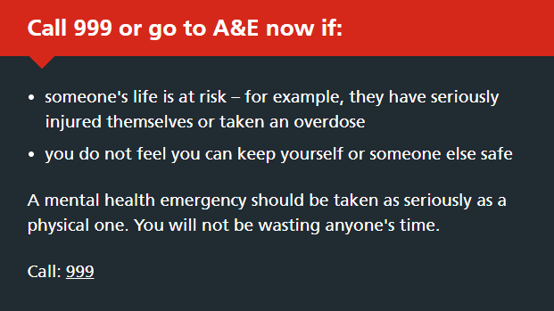
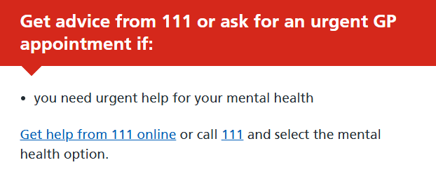

I'm adding this because it matters. I'll expand it after exams, but I want it here now.
If you need help urgently, you should get immediate expert advice and assessment.
Support services are available no matter what you're going through.

These services offer confidential support from trained volunteers. You can talk about anything that's troubling you.
I'm not a professional, but you can DM me on Discord (sebastian17101) if you need someone to talk to.
I've been through very low points myself, and I'll treat you like a human being - no judgement, no pressure.